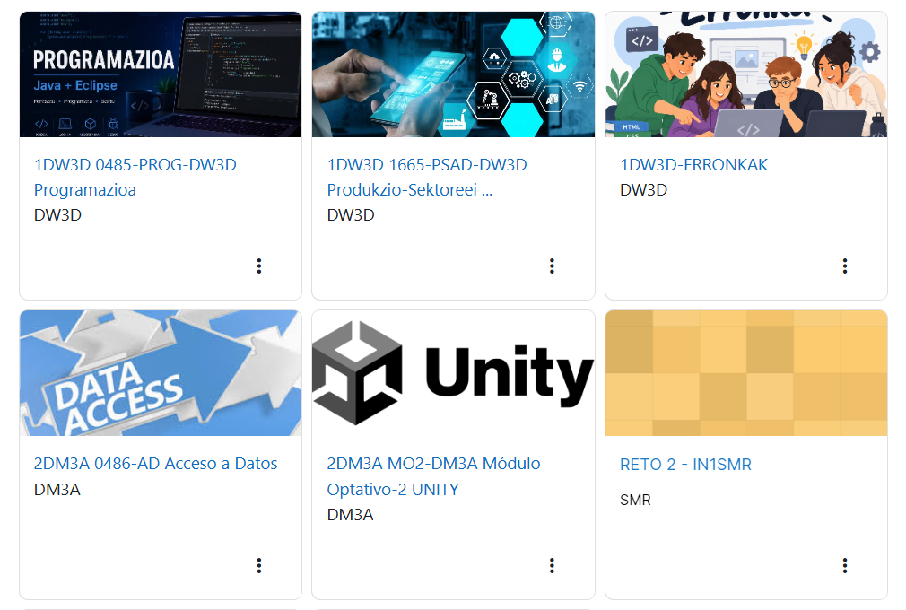
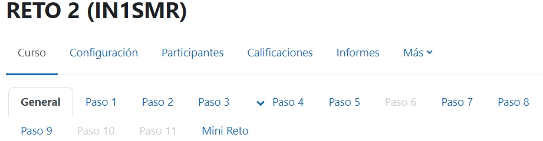
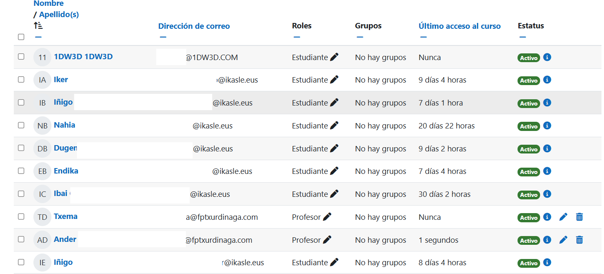
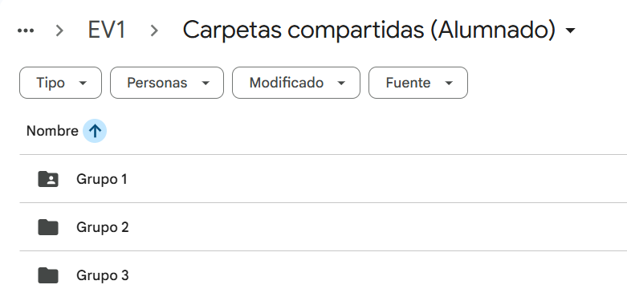
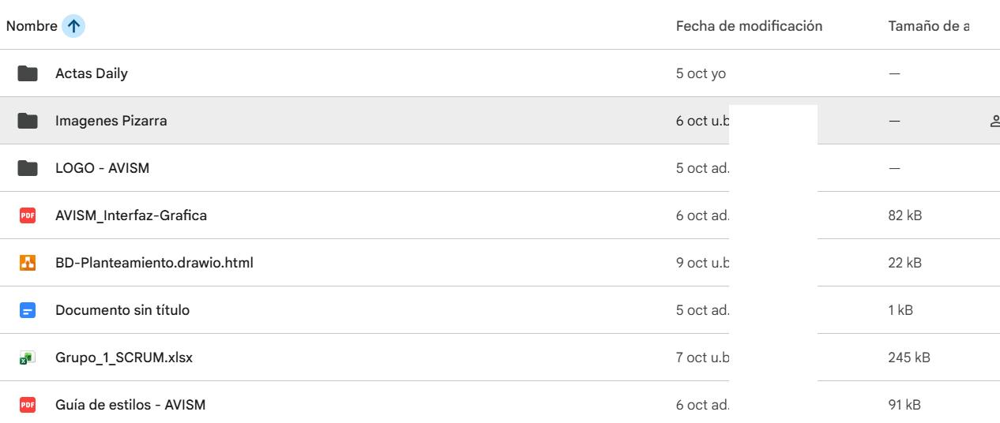

Para poner al alumnado trabajando en el tema propuesto, deberás definir previamente el contexto de colaboración del mismo. Habrás de definir los canales y herramientas de comunicación y colaboración necesarias para el trabajo en equipo y evidenciarlos en el portfolio.
¿Cómo evidenciar?
Nota: si creas un vídeo como contenido digital, para evitar problemas de autoría, tu locución debe ir acompañada de tu propia imagen.
Indicadores de logro:
Mediante esta entrega, se ha definido el contexto para la colaboración estudiantil. Para ello, se han implementado herramientas de comunicación y colaboración. Se han creado dos herramientas principales: Moodle, donde los profesores pueden asignar contenido y los estudiantes pueden consultarlo, y Google Drive, donde los estudiantes pueden crear y completar sus tareas de forma colaborativa.
Mooodle es la herramienta que usa el equipo docente para asignar tareas al alumnado y para centralizar todo el contenido didactico. Al ser una plataforma digital, facilitia mucho el enlazar los contenidos con formatos y fuentes externas. Lo que permite por ejemplo tener un moodle pero al mismo tiempo un libro digital que se centre en contenidos teorícos o vídeos explicativos de los conceptos.
La finalidad es poder proveer diferentes herramientas digitales para que estos recuross se puedan adaptar a las necesidadades del aula.
Moodle actua cómo herramienta central para la comunicación y recopilación de evidencias, mientras que otras cómo Drive y Git estarían más adaptadas a la puesta en marcha de un trabajo concreto.


En esta plataforma también gestionamos el acceso y los permisos de los participantes. Se puede ver a los estudiantes que forman parte del curso en Moodle, quienes pueden consultar todo el contenido y realizar sus entregas. Además, se muestra el rol de cada persona, el grupo al que pertenece y la última columna indica el estado del estudiante junto a su última conexión.

Para la gestión documental y el trabajo en equipo, se ha implementado la plataforma Google Drive. En la estructura organizativa, cada estudiante cuenta con su propia carpeta personal compartida directamente con el profesor. Asimismo, los estudiantes comparten sus proyectos grupales con los demás miembros de su equipo para llevar a cabo las actividades cooperativas.
Desde el equipo docente generamos una carpeta para cada grupo, ese es el espacio de trabajo colaborativo donde el alumnado redactará sus informes y llevará a cabo su trabajo.

Dentro de su carpeta personal se almacenan todos los documentos necesarios para el desarrollo del curso. Como se puede apreciar, los estudiantes hacen uso de diversos formatos según las necesidades del trabajo: documentos de texto, presentaciones de diapositivas, hojas de cálculo, entre otros.
